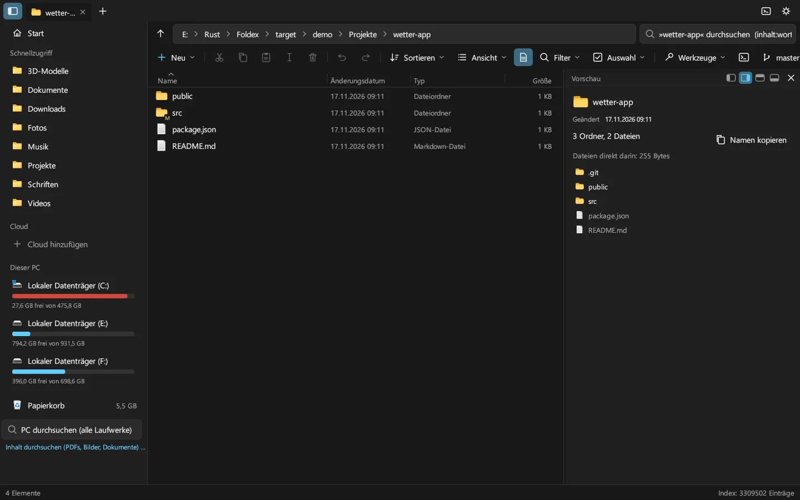
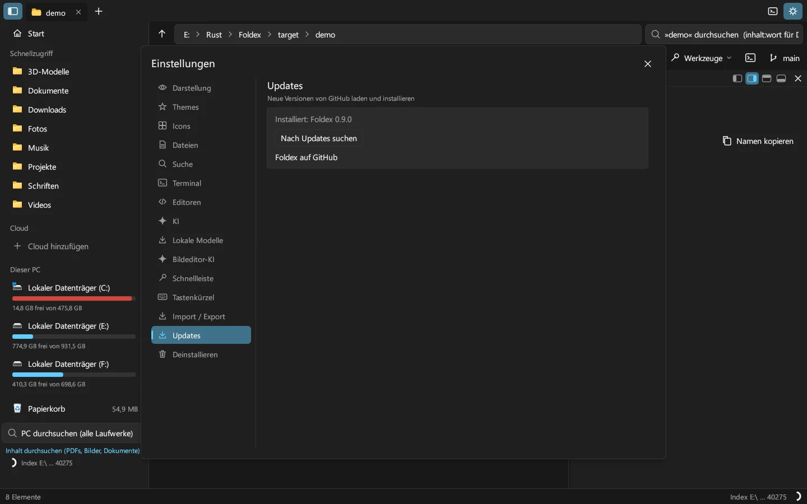

The file explorer
built for speed.
Der Datei-Explorer,
der einfach mehr kann.
Find any file on any drive as you type. Open almost every file with the space bar. Rename .heic to .jpg and it converts. Plus local AI, terminal and Git – in one fast window.
Jede Datei auf jedem Laufwerk finden, während du tippst. Fast jede Datei mit der Leertaste ansehen. .heic in .jpg umbenennen – und sie wird umgewandelt. Dazu lokale KI, Terminal und Git – in einem schnellen Fenster.

Find anything.
On every drive.
Alles finden.
Auf jedem Laufwerk.
Foldex indexes your drives in the background. Type a few letters and the results are there – by name, by type, or by what's written inside.
Foldex indiziert deine Laufwerke im Hintergrund. Ein paar Buchstaben tippen und die Treffer sind da – nach Name, nach Art oder nach dem, was in der Datei steht.
Instant filter
Sofortsuche im Ordner
Start typing in any folder – the list filters as you type, even with tens of thousands of files.
Im Ordner einfach lostippen – die Liste filtert sofort, auch bei zehntausenden Dateien.
Index search across all drives
Index-Suche über alle Laufwerke
Words in any order, exclusions, file types and folders – the index answers while you type.
Wörter in beliebiger Reihenfolge, Ausschlüsse, Dateitypen und Ordner – der Index antwortet, während du tippst.
Content search with OCR
Inhaltssuche mit Texterkennung
Searches inside PDFs, documents and photos of receipts – and explains each hit: terms, date, amount and the spot in the text.
Sucht in PDFs, Dokumenten und Fotos von Belegen – und erklärt jeden Treffer: Begriffe, Datum, Betrag und die Stelle im Text.
rechnung 2026all words, any orderalle Wörter, egal welche Reihenfolge
ext:pdf,docxonly these typesnur diese Typen
*.psdby extensionnach Endung
!backupexclude a wordWort ausschließen
is:dironly foldersnur Ordner
projekte/rustmatch the pathim Pfad suchen
inhalt:"Media Markt"inside the fileim Dateiinhalt
All of this.
In one window.
All das.
In einem Fenster.
Folder sizes, tabs, split views
Ordnergrößen, Tabs, geteilte Ansichten
Foldex calculates folder sizes in the background and remembers them – sort by size and see instantly what eats your disk.
Foldex rechnet Ordnergrößen im Hintergrund aus und merkt sie sich – nach Größe sortieren zeigt sofort, was Platz frisst.
- Tabs and split tiles, drag tabs between windows
- Filters, groups, views: details, list, grid, large icons
- Undo for copy, move, rename and delete
- Tabs und geteilte Kacheln, Tabs zwischen Fenstern ziehen
- Filter, Gruppen, Ansichten: Details, Liste, Raster, große Symbole
- Rückgängig für Kopieren, Verschieben, Umbenennen und Löschen
Change the extension – get the format
Endung ändern – Format bekommen
Press F2, type a new extension, done. Foldex converts images, audio, video, documents and archives in the background. If you switch to a completely different kind of file, it asks first.
F2 drücken, neue Endung tippen, fertig. Foldex wandelt Bilder, Audio, Video, Dokumente und Archive im Hintergrund um. Bei einem Wechsel in eine ganz andere Dateiart fragt es vorher nach.
- The original goes to the recycle bin – undo brings it back
- Many files at once: right-click → Convert
- Cancel any time, half-finished files are removed
- Das Original landet im Papierkorb – Rückgängig holt es zurück
- Viele Dateien auf einmal: Rechtsklick → Konvertieren
- Jederzeit abbrechen, halbfertige Dateien werden entfernt
Git, terminal and editor built in
Git, Terminal und Editor eingebaut
Changed files are marked, the branch sits in the toolbar and a terminal opens right in the folder. Code is shown with syntax colours for around 200 languages – and you can edit it.
Geänderte Dateien sind markiert, der Zweig steht in der Leiste, ein Terminal öffnet sich direkt im Ordner. Code wird mit Syntaxfarben für rund 200 Sprachen angezeigt und lässt sich bearbeiten.
- Git status per file, switch branches, browse commits
- Terminal with completion (PowerShell, cmd, Bash)
- Open in VS Code, Cursor, Zed and more with a right-click
- Git-Status je Datei, Zweig wechseln, Commits ansehen
- Terminal mit Vervollständigung (PowerShell, cmd, Bash)
- Öffnen in VS Code, Cursor, Zed und Co. per Rechtsklick

Folder icons that match the content
Ordner-Icons, die zum Inhalt passen
When you change a folder icon, Foldex first suggests icons that fit what's inside – pictures, code, Git, music, documents. Plus over a thousand symbols from three icon themes, colours or your own image.
Beim Ändern eines Ordner-Icons schlägt Foldex zuerst Vorlagen vor, die zum Inhalt passen – Bilder, Code, Git, Musik, Dokumente. Dazu über tausend Symbole aus drei Icon-Themes, Farben oder ein eigenes Bild.
Many images at once
Viele Bilder auf einmal
Select images, right-click, Edit images: resize, change format, remove the background, upscale. Runs in the background with progress – the originals stay untouched.
Bilder markieren, Rechtsklick, Bilder bearbeiten: Größe ändern, Format umwandeln, Hintergrund entfernen, hochskalieren. Läuft im Hintergrund mit Fortschritt – die Originale bleiben unberührt.
- Transcribe audio to
.txt, subtitles for videos as.srt - Trim video & audio straight from the preview
- Image editor with AI: cut out, colourise, retouch
- Audio in
.txtumwandeln, Untertitel für Videos als.srt - Video & Audio direkt aus der Vorschau kürzen
- Bildeditor mit KI: freistellen, kolorieren, retuschieren

Updates with one click
Updates mit einem Klick
Foldex checks for a new version once a day. One click downloads the latest installer, updates silently and restarts Foldex – settings, history and models stay. Your installed version is always shown in the settings.
Foldex schaut einmal am Tag nach einer neuen Version. Ein Klick lädt den neuesten Installer, aktualisiert still und startet Foldex neu – Einstellungen, Verlauf und Modelle bleiben. Die installierte Version steht immer in den Einstellungen.

Press space.
See everything.
Leertaste drücken.
Alles sehen.
Code, Office, 3D models, fonts, videos, PDFs and archives – without opening another app.
Code, Office, 3D-Modelle, Schriften, Videos, PDFs und Archive – ohne ein weiteres Programm zu öffnen.

AI that works
on your PC.
KI, die bei dir
auf dem PC bleibt.
Use Claude, OpenAI and other services – or run your own models locally. Files, photos and recordings only leave your PC if you want them to.
Claude, OpenAI und andere Dienste nutzen – oder eigene Modelle lokal ausführen. Dateien, Fotos und Aufnahmen verlassen den PC nur, wenn du es willst.

/aufräumenTidy a folder: subfolders by type, date or projectOrdner sortieren: Unterordner nach Art, Datum oder Projekt/duplikateFind duplicate filesDoppelte Dateien finden/commitCommit message from your changesCommit-Nachricht aus den Änderungen/reviewCode review: bugs, risks, improvementsCode-Review: Fehler, Risiken, Verbesserungen/korrigierenFix spelling and grammarRechtschreibung und Grammatik verbessern/csvAnalyse CSV or ExcelCSV oder Excel auswertenAgentsAgenten
Claude Code, Codex and Gemini CLI right in the folder – with approval for every change and undo.
Claude Code, Codex und Gemini CLI direkt im Ordner – mit Freigabe für jede Änderung und Rückgängig.
Local modelsLokale Modelle
Download and run text and image models (SD-Turbo, FLUX …) that fit your graphics card and RAM.
Text- und Bildmodelle (SD-Turbo, FLUX …) laden und ausführen, passend zu Grafikkarte und RAM.
Voice inputSpracheingabe
Dictate with Whisper, locally. No audio leaves your PC.
Diktieren mit Whisper, lokal. Kein Ton verlässt den PC.
Small things.
Big time savers.
Kleine Dinge.
Viel gesparte Zeit.
Cloud drivesCloud-Laufwerke
Google Drive, OneDrive, iCloud, Dropbox and more as a drive – with live sync and a cloud recycle bin.
Google Drive, OneDrive, iCloud, Dropbox und mehr als Laufwerk – mit Live-Abgleich und Cloud-Papierkorb.
ShareTeilen
To phones on your Wi-Fi via LocalSend, to WhatsApp or as a link – no detours.
An Handys im WLAN per LocalSend, an WhatsApp oder per Link – ohne Umweg.
ArchivesArchive
Open, extract and create ZIP, 7z, RAR, TAR, GZ, XZ and ZST.
ZIP, 7z, RAR, TAR, GZ, XZ, ZST öffnen, entpacken und packen.
PrintingDrucken
Print PDFs and images with live preview, page selection and black & white.
PDFs und Bilder drucken, mit Live-Vorschau, Seitenauswahl und Schwarz-Weiß.
PDF toolsPDF-Werkzeuge
View pages, copy text (with OCR too), turn documents into PDF.
Seiten ansehen, Text kopieren (auch per Texterkennung), Dokumente in PDF umwandeln.
Start pageStartseite
Quick access, drives, cloud and your own wallpapers at a glance.
Schnellzugriff, Laufwerke, Cloud und eigene Hintergrundbilder auf einen Blick.
Themes & iconsThemes & Icons
Light, dark and many colour themes; Material, Catppuccin and VS Code icons.
Hell, dunkel und viele Farbthemen; Material-, Catppuccin- und VS-Code-Icons.
Keyboard shortcutsTastenkürzel
Every command can get its own key – freely assignable, with conflict check.
Jeder Befehl mit eigener Taste – frei belegbar, mit Konfliktprüfung.
Git
Status per file, branches and commits right in the file list.
Status je Datei, Zweige und Commits direkt in der Dateiliste.
Foldex vs.
Windows Explorer.
Foldex und der
Windows-Explorer.
| FeatureFunktion | Foldex | Explorer |
|---|---|---|
| Index search across all drives while typingIndex-Suche über alle Laufwerke beim Tippen | ✓ | – |
| Content search in PDFs and photos with OCRInhaltssuche in PDFs und Fotos mit Texterkennung | ✓ | – |
| Convert by changing the extensionKonvertieren durch Ändern der Endung | ✓ | – |
| Folder sizes in the listOrdnergrößen in der Liste | ✓ | – |
| Quick Look with space bar (code, 3D, fonts …)Schnellansicht mit Leertaste (Code, 3D, Schriften …) | ✓ | – |
| Split view in one windowGeteilte Ansicht in einem Fenster | ✓ | – |
| Git status and terminal in the folderGit-Status und Terminal im Ordner | ✓ | – |
| Tabs | ✓ | ✓ |
Questions?
Answers.
Fragen?
Antworten.
What does Foldex cost?Was kostet Foldex?
Nothing. Foldex is free, needs no account and its source code is on GitHub.
Nichts. Foldex ist kostenlos, braucht kein Konto und der Quelltext liegt auf GitHub.
How fast is the search?Wie schnell ist die Suche?
Foldex builds an index of your drives in the background. After that, name searches across all drives answer while you type. Content searches read the files and cache recognised text, so the second search is much faster.
Foldex legt im Hintergrund einen Index deiner Laufwerke an. Danach antwortet die Namenssuche über alle Laufwerke, während du tippst. Die Inhaltssuche liest die Dateien und merkt sich erkannten Text – die zweite Suche ist viel schneller.
Can I search inside files?Kann ich in Dateien suchen?
Yes. Type inhalt:word (or content:) in the search bar, with quotes for several words. The AI content search reads PDFs, documents and images with OCR and explains each hit.
Ja. In der Suchleiste inhalt:wort (oder content:) eingeben, für mehrere Wörter mit Anführungszeichen. Die KI-Inhaltssuche liest PDFs, Dokumente und Bilder mit Texterkennung und erklärt jeden Treffer.
Do I need admin rights?Brauche ich Administratorrechte?
No. The installer sets up Foldex for your user only.
Nein. Der Installer richtet Foldex nur für deinen Benutzer ein.
Can I use Foldex without installing it?Geht Foldex auch ohne Installation?
Yes. Download the portable foldex.exe and start it directly. The installer adds Start menu shortcuts and automatic updates.
Ja. Die portable foldex.exe laden und direkt starten. Der Installer ergänzt Startmenü-Verknüpfungen und automatische Updates.
How does converting by renaming work?Wie funktioniert Konvertieren per Umbenennen?
Rename a file (F2) and type a different extension, e.g. .heic → .jpg. Foldex converts it in the background and moves the original to the recycle bin, so undo brings it back. Audio and video use ffmpeg, if it is installed.
Datei umbenennen (F2) und eine andere Endung eintippen, z. B. .heic → .jpg. Foldex wandelt sie im Hintergrund um und legt das Original in den Papierkorb – Rückgängig holt es zurück. Audio und Video laufen über ffmpeg, sofern es installiert ist.
Are my files sent to the cloud?Werden meine Dateien in die Cloud geschickt?
Only if you want them to. Search, OCR, voice input and local models run entirely on your PC. Online services like Claude or OpenAI are only used if you set them up.
Nur, wenn du es willst. Suche, Texterkennung, Spracheingabe und lokale Modelle laufen komplett auf deinem PC. Online-Dienste wie Claude oder OpenAI nutzt Foldex nur, wenn du sie einrichtest.
Does Foldex replace Windows Explorer?Ersetzt Foldex den Windows-Explorer?
No, it runs alongside it. Windows Explorer keeps working as usual – use whichever you like.
Nein, es läuft daneben. Der Windows-Explorer bleibt wie gewohnt – du nutzt, was du magst.
How do I send files to my phone?Wie schicke ich Dateien aufs Handy?
Right-click → Share → LocalSend. Foldex finds the phones in your Wi-Fi and sends directly – LocalSend just has to be open on the phone.
Rechtsklick → Teilen → LocalSend. Foldex findet die Handys im WLAN und sendet direkt – auf dem Handy muss nur LocalSend geöffnet sein.
How do I get updates – and which version do I have?Wie bekomme ich Updates – und welche Version habe ich?
Foldex checks for a new version once a day; one click installs it. Your installed version is shown at the top of the settings.
Foldex sucht einmal am Tag nach einer neuen Version, ein Klick installiert sie. Die installierte Version steht oben in den Einstellungen.
How do I uninstall Foldex?Wie deinstalliere ich Foldex?
Via “Apps & features” in Windows Settings, or in Foldex under Settings → Uninstall.
Über „Apps & Features“ in den Windows-Einstellungen oder in Foldex unter Einstellungen → Deinstallieren.
I found a bug or have an idea – where do I send it?Fehler gefunden oder eine Idee – wohin damit?
Open an issue on GitHub or write an email to jetouss@tssnt.dev.
Als Issue auf GitHub oder per E-Mail an jetouss@tssnt.dev.
Free, and ready in a minute.
Get Foldex.
Kostenlos und in einer Minute startklar.
Hol dir Foldex.
The installer sets up Foldex for your user – without admin rights – and always fetches the newest version from GitHub.
Der Installer richtet Foldex für deinen Benutzer ein – ohne Administratorrechte – und holt immer die neueste Version von GitHub.
Version 0.9.4 · Windows, 64-bit · All versionsAlle Versionen
Questions, feedback, ideas?
Fragen, Feedback, Ideen?
Write me – I read every message.
Schreib mir – ich lese jede Nachricht.